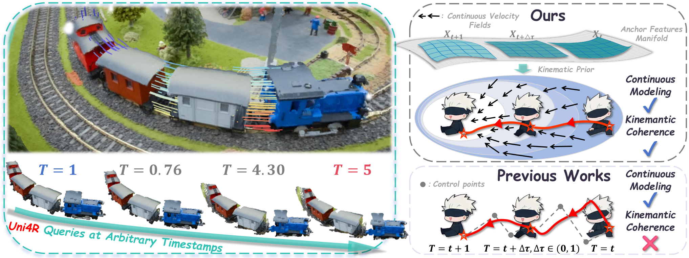
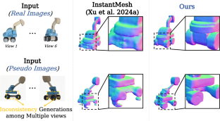
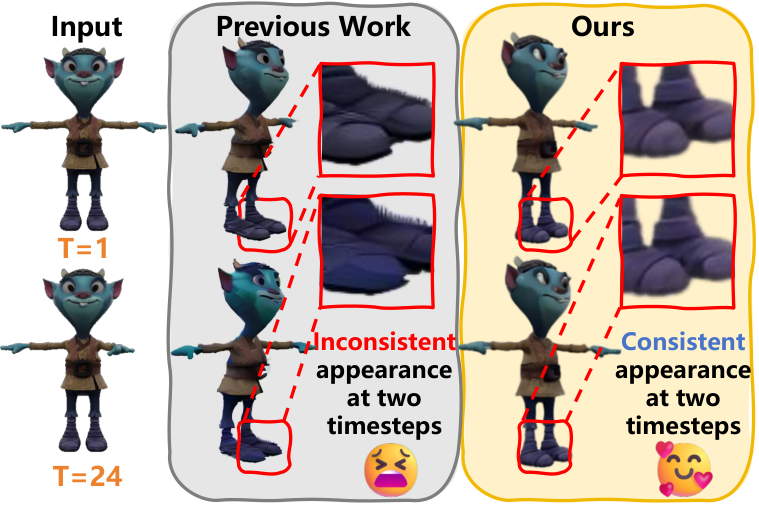
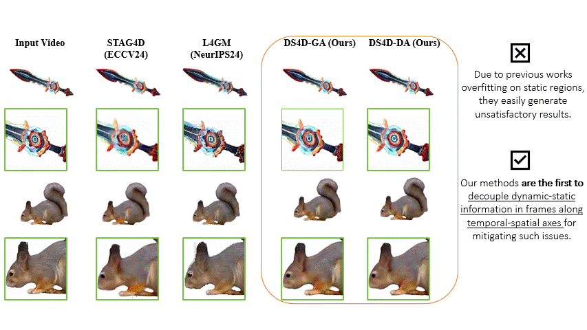
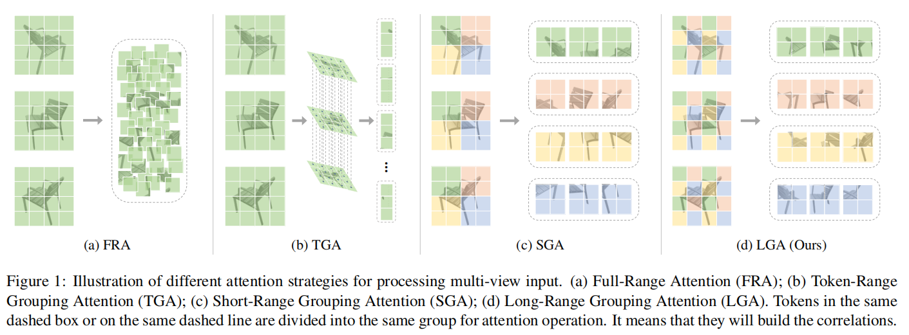
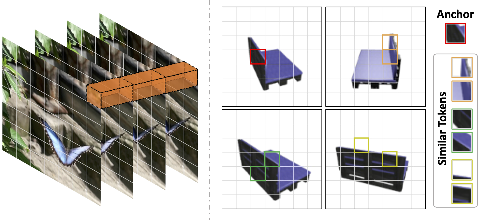

NeurIPS 2026
Marrying Optimal Transport and ODEs for Unified Continuous-Time 4D Reconstruction and Tracking
Uni4R unifies 4D reconstruction and point tracking through continuous velocity fields.
3D / 4D COMPUTER VISION
Ph.D. Student · Macau University of Science and Technology
I work on 3D and 4D reconstruction and generation. My research explores how to reconstruct geometry and motion from images and videos, and how to generate consistent, dynamic 3D content. My current research focuses on world-action models for embodied intelligence.
I am a Ph.D. student at Macau University of Science and Technology and a research intern at NIO (蔚来).
First-author and co-first-author work. * Equal contribution.

NeurIPS 2026
Uni4R unifies 4D reconstruction and point tracking through continuous velocity fields.

International Journal of Computer Vision · 2026
BA-LRM uses boundary-aware features and adaptive feature deformation for sparse-view mesh reconstruction.

SIGGRAPH Asia 2026
4DSTAR propagates spatial-temporal states to generate temporally coherent dynamic 3D Gaussians.

ICCV 2025 Highlight
DS4D separates dynamic and static features for video-to-4D generation.

ICCV 2023
LRGT models long-range relationships across views for multi-view 3D reconstruction.

ICCV 2023
UMIFormer identifies and combines related tokens across views to recover 3D shape.